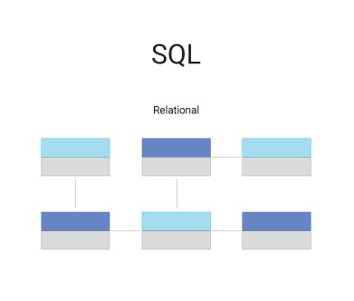

Vielle Technologique sur technologies Backend et Base de données
Le Backend représente la partie invisible des sites web. Il est indispensable pour les sites web modernes, car sans lui, aucun site ne pourrait être interactif ou dynamique. Les technologies de base de données sont les moyens par lesquels les informations d'un site sont conservées et partagées. Ces deux domaines sont étroitement liés et ne peuvent être dissociés.
Les tendances actuelles
Les backen sans serveur
Le backend sans serveur (“serverless”) Au lieu d’avoir un serveur traditionnels, on utilise des services comme AWS Lambda, Vercel ou Cloudflare Workers qui exécutent du code à la demande, ce qui réduit les coûts et améliore la performance.
Les API de plus en plus utilisées
Les API de plus en plus utilisées Les applications modernes utilisent des API (interfaces) pour connecter le frontend au backend. Des technologies comme GraphQL et gRPC deviennent très populaires pour envoyer et recevoir des données plus efficacement.
L'AI intégrée au backend
L’IA intégrée au backend. De plus en plus d’applications utilisent l’intelligence artificielle pour analyser les données, améliorer la sécurité ou générer des contenus dynamiques.
Les technologies backend les plus utilisées en 2025
Node.js rapide et utilisé pour des applications modernes avec Express.js, NestJS.
Php toujours très utilisé, surtout avec Laravel pour les applications web.
Python très populaire pour l’IA et le web, avec des frameworks comme Django et FastAPI.
Go (Golang) Connu pour sa rapidité et sa gestion facile des connexions multiples.
Rust Monte en puissance pour les applications ultra-sécurisées et performantes.
Framworks backend modernes
Sprint Boot (Java) Un classique pour les applications d’entreprise.
Express.js (JavaScript) Très léger et rapide pour créer des API en JavaScript.
Nest.JS (Node.js) Un framework plus structuré pour les grandes applications.
Django (Python) Rapide, sécurisé et utilisé par des grandes entreprises comme Instagram.
Laravel (PHP) Simplifie le développement web et ajoute des fonctionnalités avancées comme l’authentification et l’envoi d’e-mails.
Les bases de données les plus utilisées en 2025
Base de données relationelles (SQL)
MySQL
Toujours une référence pour stocker des données organisées (exemple : utilisateurs, commandes…).
PostgreSQL
Plus avancé que MySQL, il gère des données complexes et volumineuses.
MariaDB
Une alternative open-source à MySQL, plus rapide dans certains cas.
Base de données non relationelles (NoSQL)

MongoDB
Très utilisé pour les applications modernes et les données non organisées (exemple : stocker des commentaires, des posts…).
Firebase
Géré par Google, il permet de stocker des données en temps réel (exemple : chat, notifications).
Redis
Ultra rapide, utilisé pour les caches et les systèmes en temps réel.